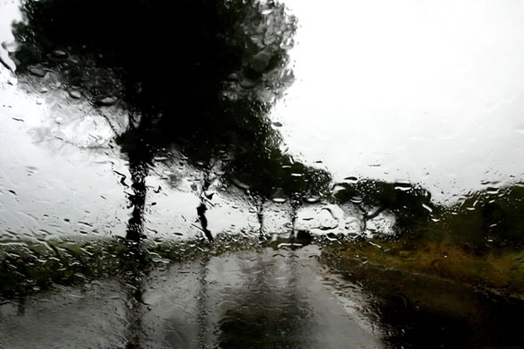
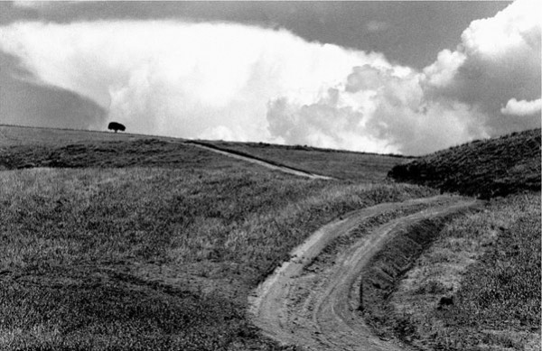

-
Turns in a Path: Abbas Kiarostami on Like Someone in Love
by Aaron Cutler December 14, 2012

This interview was held at this year’s São Paulo International Film Festival. The Iranian filmmaker Adel Yaraghi, whose first feature Meeting Leila was co-written by Kiarostami, translated Kiarostami’s answers from Farsi to English.
In your absence
I converse with you,
when you are there
I converse with myself.
- Untitled Abbas Kiarostami poem, published in his collection A Wolf Lying in WaitLike Someone in Love begins in a bar, with the sound of a disembodied voice on a phone. In time, a young woman on a mobile comes into view. She is speaking with her boyfriend, who is interrogating her. As the night goes on, Akiko (Rin Takanashi), a university student longing for sleep, will ignore his demands in favor of propositions from two lonely elders: her grandmother, who is in Tokyo for the night and leaving numerous voicemails, and Takashi (Tadashi Okuno), an old sociologist and translator who has hired her to spend the night with him. Shortly after she enters his home, he shows her a portrait that he considers his ideal woman, and encourages her to stand beneath it.
Both Akiko and Takashi, we sense, have worked to shield themselves from interacting with real people, and the film’s visual design reflects this. For Akiko, whose refuge is sleep, the solution to conflict lies in moving offscreen; for Takashi, who lives in a fragile fortress of memories, the solution is to build frames for himself and live subsequently behind closed doors. Yet the two are far from alone in walling themselves inside their individual realities, as each person they meet—most notably Akiko’s boyfriend Noriaki (Ryô Kase), a car mechanic who demands that her “grandfather” accept him, and Takashi’s old female neighbor (Mihoko Suzuki), who leans out her window dreaming of marriage—has also built his or her own. The film’s Tokyo is an isolated and isolating place; the most extended view that we get of the city is from inside a taxicab, as Akiko looks for someone she knows. In this place, a knock on a car window can seem like a violation.
This conflicted worldview, in which one opens oneself to discovering a place while still feeling troubled by one’s foreignness to it, and even desiring to keep oneself apart from it, belongs unmistakably to the film’s director, the Iranian Abbas Kiarostami. The brave new worlds that trouble his characters often include beloved humans as well as new locations—in fact, the emotional distance between two people often proves harder to cross than any road. Yet though this latest film follows a career-long attempt to traverse that distance, its approach is new. Its method is less like the mobile pursuit of pleading, or erupting, couples in many of Kiarostami’s previous films, including his recent Italy-set feature, Certified Copy (2010), and more like a distilled succession of frozen moments involving solitary people. It is as though the film itself is contemplating a solitude that has already long been realized.
This solitude belongs to the filmmaker’s gaze as much as it does to any character’s. Something often lost in discussions of Kiarostami’s filmmaking, and perhaps forming more appropriate comparisons to Like Someone in Love than his previous films, are his parallel careers as a poet (with two collections published in English) and as a still photographer (many works of which can be glimpsed in the 2005 short film Roads of Kiarostami). In both he strives, as he does here, to record first-person impressions. The poems, usually falling between two and six lines, register quiet instants of appreciation (“A young moon/an old wine/a new friend”); the photographs, often in black and white, feel equally illusory, capturing natural beauties like trees and paths quickly and from a distance. As with Like Someone in Love, the images of both the poems and photographs linger after vanishing, regardless of whether their subjects seem physical or ephemeral. Love, too, is a sight that one catches.
Rain (27) by Abbas Kiarostami (2007). Image courtesy of The Guardian.
What are the major differences for you between being in love and being like someone in love?
I think being in love is a period into which we fall and out of which we fall. It’s a temporary period, and not one that goes on forever. Having said that, this title would be applied to anybody who is in love, because after we fall out of love we think, “How was it that I fell in love, and how did I spend that period of time?” This happens even with the classic love affairs that we experience in literature, or that we have in real life. To talk about the four main characters of the film—the old gentleman, the girl, the boyfriend, and the old man’s female neighbor—this title would apply to all of them.
How did you come to make a film in Tokyo?
The idea for the film came from a single image that I saw when I was in Tokyo many years ago. We were passing by a neighborhood very late at night, a neighborhood full of businessmen in black suits, with black ties and briefcases, all very businesslike. They were surrounding a young girl who was wearing a wedding gown. The image of the white wedding gown between all these black suits was very interesting to me. When I asked what she was doing in between all these men, I was told that she was one member of a group of young women who would come to Tokyo and, in order to pay their university tuition, would work part-time as escorts for businessmen. This image led me, years later, to make a film about the girl.
To build a character, in any script or book or story, you have to have a character’s background. I imagined this girl as someone who had come from a small town to a big town to live and work and study. So the starting point for the film was her and her situation, and then other characters gathered around her. As is necessary for any story, I had to find a group of people to be with her in order to explain her character more. I had to bring these other characters into the story to help create and show her, to help bring her out from being a cardboard character to a character with perspective and three-dimensionality. It soon came naturally that she would be surrounded by some men, such as her pimp, the old man, and her boyfriend, and so they became part of the story as well.
Naturally, in going from writing the script to actually filming the story, we tried to envision this character of the girl and the surrounding characters as best as we could in all aspects. We cast the actress that I thought would be most right for the character, then I chose a pimp, and I chose her girlfriend, and her boyfriend, and all the people that she was involved with.
You establish a pattern at the beginning of Like Someone in Love in which people are isolated from each other spatially. There are characters who are speaking to each other but who do not appear in the same shot. Why?
This film is radical in that it doesn’t have a specific beginning, nor does it have a specific end. We are never on time for any story. In real-life situations we always get into the story late, and we always leave the story too early. So this was a chance for me to emphasize that in a radical way—to emphasize that this is how it is. We start the film, or any story that would surround us, by hearing first. Even if we take this hotel where we are having our interview as an example, if there is an interesting story going on, if it were to catch our attention it would be through aural means first. And then if we were interested, then we would want to seek the story out with our eyes and watch it. In this film I used the same technique—or the same pattern, as you might say. We get into the story by hearing it first, and then, once we’ve heard enough to be interested, wanting to know what will go on next, then we go to the visual part. So this was a technique that I used to emphasize a reality that exists.
What interested you about the reality that you were filming?
My first sight of Tokyo was a touristic vision. I saw it as a tourist, more so than from looking at it with a Japanese point of view. But what remained with me afterwards, and what was interesting to me, were the traditional Japanese ways of life and culture. I knew them from being in Tokyo my first time, and being there again reiterated my feelings and made me want to see these things once more.
Sometimes I think that my familiarity with Japan came out of my experience of watching Yasujiro Ozu’s films, which were shown in the Tehran cinematheque when I was 20. But when I think again, I feel that it might be that my familiarity with Japanese culture and with the Japanese way of life is even older than that. I think that it might come from the haikus that I read when I was young. They deal very much with images, and explain images in poetic form, and to me they have a lot to do with the Japanese way of looking at life.
Roads (44) by Abbas Kiarostami (1989). Image courtesy of The Guardian.
I also started photography more than 35 years ago, and if you ever see my photographs, you will see that they are very similar to Japanese homemade black-and-white paintings. So my familiarity with Japan is very old. I don’t know where this familiarity started, but I feel that it comes from way, way back in my life.
You are also a poet. What do you see as the commonalities between your poetry and your cinema?
The main similarity lies in their starting points. They both come out of the same person, and they both come from the same way of looking at life. They both explore things that interest me, like Nature or naturalistic people—introverted people who are natural and real. So I think that the poems are like the films, only, instead of being put together by frames, they are put together by words. The works in both forms are similar to each other, and they influence each other as well.
Tehran, Tuscany, Tokyo: Where is next?
I wish Iran, but if it does not happen, Italy. There are two different projects that I’m working on, so whichever project is more possible, then that place will be next.
Like Someone in Love opens through IFC Films on February 15.